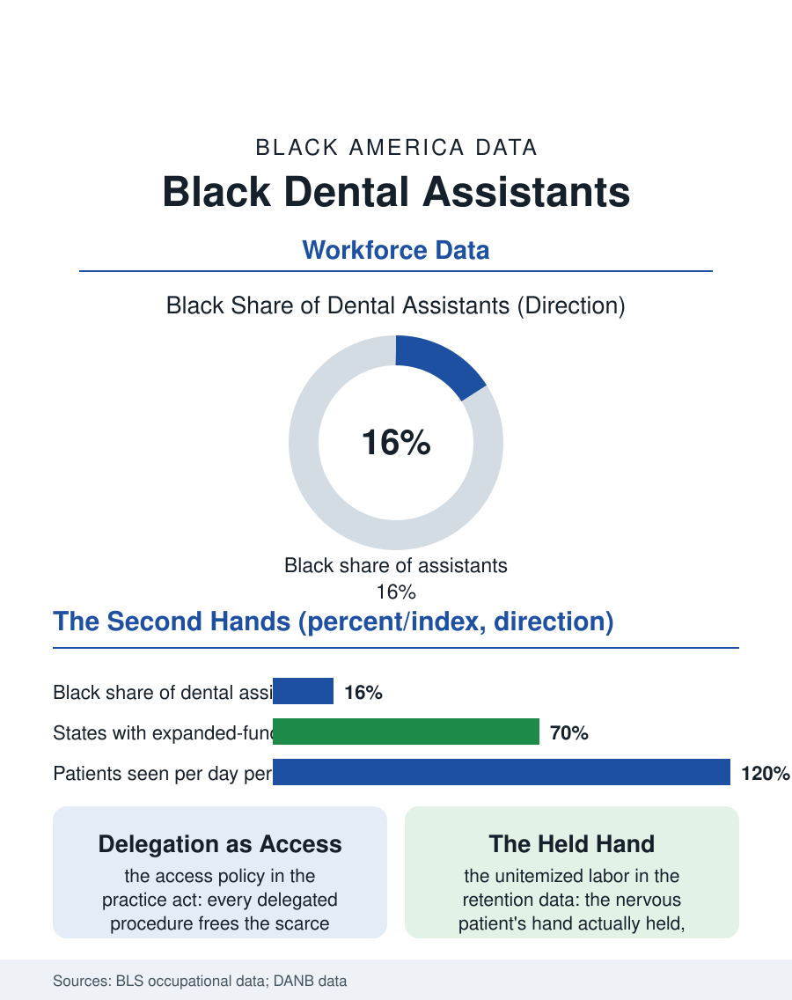

Black Employment
Four Hands: Black Dental Assistants
The instrument passed at the exact second, the hand held, the scope widening into access policy. The dental assistant file.

The dental assistant is the dentist's second pair of hands and the patient's second face of the practice, and the occupation, expanded in scope across the states in the current era, employs Black workers above their population share in the settings where most dental care is delivered. This article reads the dental assistant file.
Four Hands, One Chair
The occupation's craft is the choreography the patients feel without seeing: the suction and the instrument pass, the material mixed to the second, the four-handed dentistry whose efficiency is the practice's schedule and whose skill is the assistant's unspoken curriculum, topped in the expanded-function states by the delegated procedures, the sealants and the restorations' finishing, that the licensing file keeps widening as the dentist shortage's pressure builds. The credential is the patchwork's: the state registrations and the radiography certificate as the floor, the national certification as the ladder's mark, the training supplied by the community college and the for-profit file's dental programs and, in the pattern of the other chairs, by the practice itself, the dentist training the chairside hire in the apprenticeship the occupation began with. The wage runs in the care economy's band, the experienced expanded-function assistant in the shortage markets commanding the premium the generalist's schedule does not. The group practice and the dental service organization are restructuring the chairside's employer in the current data, the corporate platforms standardizing the assistant's scope and schedule across hundreds of offices while the solo practice's apprenticeship intimacy contracts to the shrinking tier, so that the occupation's newest workers increasingly learn the craft inside a system rather than beside a single dentist, a change whose training quality the certification's standardization is meant to hold constant and whose mentorship the veteran assistants describe as the thing the system's efficiency spends. The public health clinic's chair deserves its line as the occupation's mission tier: the assistants of the federally qualified centers and the school-based programs deliver the safety net's dentistry at volumes the private file cannot match, their expanded functions in the leading states making them the access file's front line in the most literal sense the phrase allows in this section.
The Practice's Memory
The assistant's other function is the record's and the relationship's: the chart, the images, the recall list that is the practice's annuity, and the patient's confidence, the nervous patient's hand actually held in the practices where that is the culture, a labor the fee schedule does not itemize and the retention data reward. The workforce's composition in the surveys is heavily female, its Black share in the metro practices reflecting the occupation's accessibility, a year or less of training from the school's exit to the chair's side, and the ladder above runs to the hygienist's license, the two-year degree whose tuition the assistant's wage must carry, or to the office's management, the front desk's and the insurance file's mastery being the practice's other profession, in which the veteran assistant is so often the incumbent that the titles blur in the small practice's reality.
The Chairside's Account
The dental assistant file closes on the delegation's frontier, because the occupation is where the dental access file's arithmetic is being answered: every procedure the assistant may perform under the license is a unit of care the scarce dentist's hour is freed from, and the states' scope expansions are therefore access policy written in the practice act, their demographic consequence being the workforce this file counts delivering a rising share of the care the underserved file measures. The bureau counts the occupation in the hundreds of thousands. The file's last entry is the pass of the instrument at the exact second the dentist's hand opens for it, unrequested and correct, the occupation's whole mastery in a gesture the patient never sees, performed by the worker the practice could not run an hour without, at the wage the care economy assigns the indispensable. The infection control file is the chairside's own sterile chain, the assistant's operatory turnover between the patients being the practice's version of the hospital basement's discipline, performed in minutes under the schedule's eye. It is the work the whole building quietly assumes, and the file's purpose is to stop assuming it silently.
More in Black Employment
The Black Unemployment Rate: The Two-to-One Pattern
Black unemployment runs at roughly twice the White rate — 5.5 percent against 3.3 percent in annual averages — a ratio stable across five decades of federal data. How it is measured and why it persists.
Black Median Weekly Earnings: The 80-Cent Ratio
Black full-time workers earn a median of about $900 a week — roughly 80 cents for every dollar White workers earn. The BLS earnings data by group, gender, and occupation.
Black Labor Force Participation: Working at National Rates
Black labor force participation runs at roughly the national rate — and Black women participate at higher rates than White women. The BLS participation data.
Source: Bureau of Labor Statistics occupational employment data; Dental Assisting National Board workforce data.